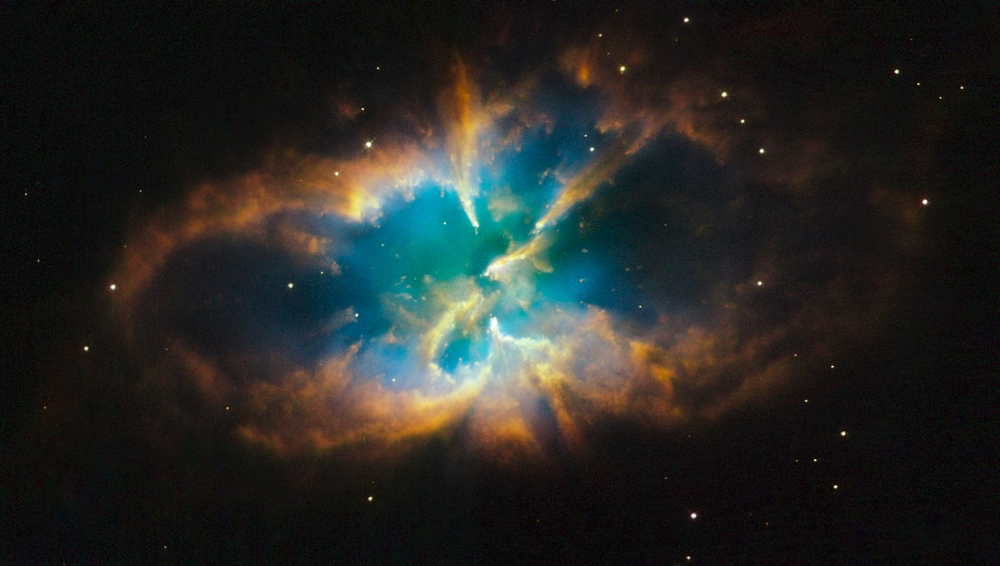

Space - The Last Frontier
History of Space Exploration
Space exploration began only 60 years ago and look at where we are now! The first man in space was Russian cosmonaut Yuri Gagarin. He completed one orbit of the Earth and beat the Americans to space by only a few months. Some other famous firsts include the first satellite launched into space in 1957. The first animal in space was Laika the dog, also in 1957. John Glenn was the first American in space in 1962. Neil Armstrong was the first man to walk on the Moon in 1969. The first private commercial space mission happened in 2012 when SpaceX send an unmanned capsule with supplies to the International Space Station. Just last year, in 2021, the original captain of Star Trek's Enterprise, William Shatner, became the oldest person in space at the age of 90 years old. In 2013, Canadian Chris Hadfield created the first music video in space.

Only 9 Canadians have ever been in space. Marc Garneau was the first to go to space in 1984. In 2013, Canadian Col. Chris Hadfield joined the crew of the International Space Station. He became famous during his mission to space by documenting the daily life of an astronaut (such as "how astronauts sleep") using social media and by sharing breathtaking photographs on his Twitter account. He also charmed his fans with his rendition of David Bowie's "Space Oddity".
Exhilirating Quotes About Space:
- "That's one small step for a man, one giant leap for mankind." - Neil Armstrong
- "Space is for everybody. It’s not just for a few people in science or math, or for a select group of astronauts. That’s our new frontier out there, and it’s everybody’s business to know about space." – Christa McAuliffe
- "NASA's next urgent mission should be to send good poets into space so they can describe what it's really like." - Shannon Hale
- "Astronauts are inherently insane. And really noble." – Andy Weir
- "Once you can accept the universe as matter expanding into nothing that is something, wearing stripes with plaid comes easy." – Albert Einstein.
- "No one ever accomplished anything great sitting down." - Chris Hadfield